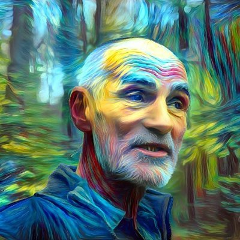

Povestitor · Ghid de Ecologie Profundă · Domogled-Valea Cernei
Povestitor · Ghid de Ecologie Profundă · Ontologie & Epistemologie
Spun povești despre cum oamenii se întorc în lumea mai-mult-decât-umană. Munții Carpați ca trecere de la spectator la participant.

Am trecut prin lumi foarte diferite — publicitate, HR, business, IT — înainte de a deveni ranger în Carpați. Nu a fost o evadare, ci o căutare. Fiecare etapă m-a adus mai aproape de întrebarea care conta: cum trăim bine în lume, nu doar în mijlocul ei?
Astăzi lucrez în Parcul Național Domogled-Valea Cernei — 4.963 de hectare pe care le patrulez, le ascult și le protejez. Văd ce se întâmplă cu oamenii care vin de la oraș, epuizați de o lume care i-a convins că sunt separați de natură. Îi privesc cum respiră din nou.
Vorbesc fluent română și engleză. În germană și franceză am competențe limitate de lucru. Am lucrat cu comunități montane, cu sute de elevi, cu oameni care au venit să vadă un parc național și au plecat cu altceva — mai greu de pus în cuvinte, dar mai ușor de purtat.
„Magia nu a dispărut niciodată. Pur și simplu am uitat cum să o vedem. Vino. Îți arăt unde să privești."
— Gheorghe LunguOpt ani de patrulare în Domogled-Valea Cernei și Porțile de Fier — zone strict protejate unde natura vorbește, dacă știi cum să fii liniștit.
Am lucrat cu 10 școli și peste 1.000 de copii și adulți — nu pentru a-i învăța despre natură, ci pentru a crea condițiile în care natura devine parte din ei. Fiecare trece prin asta în felul lui. Eu însoțesc prezența.
Scriu pe ggverb.ro despre ecologie profundă, ontologie și ce se întâmplă când un om intră cu adevărat într-o pădure. Blog activ din 2013.
Folosesc inteligența artificială în educația ecologică, storytelling și cercetarea ontologică — nu ca substitut al gândirii, ci ca amplificator al ei.
Trei decenii în industrii diverse — de la România post-comunistă timpurie la conservarea parcurilor naționale.
Monitorizarea și administrarea a 4.963 de hectare de arie protejată, inclusiv peste 2.500 de hectare de Zonă de Protecție Integrală. Activități legate de impactul protecției naturii și al turismului asupra comunităților montane izolate, bogate cultural.
Protecția mediuluiEducație ecologică. Responsabil de turism. Responsabil de comunicare. Lucru cu 10 școli și aproximativ 1.000 de elevi din apropierea ariei protejate.
Educație ecologicăMonitorizarea și administrarea a 22.725 de hectare de arie protejată, inclusiv peste 2.000 de hectare de Zonă de Protecție Integrală. Activități legate de impactul protecției naturii și al turismului asupra comunităților montane izolate, bogate cultural.
Protecția mediuluiDesign grafic Corel, imprimante, cuttere, gravoare. Tipărire pe diverse materiale, cu responsabilități la ghișeul cu publicul.
Publicitate & DesignPredarea Matematicii timp de 2 ani în Timișoara și alți 6 ani exclusiv în sate izolate. Lecții antropologice valoroase, din prima mână, despre viața comunității și tradițiile culturale.
EducațieProgres de la operator calculator la managementul sitului. Supervizarea transporturilor pe Dunăre pentru export. Responsabil de managementul calității, recepția stocurilor, sortare și livrare. Am operat excavatoare și stivuitoare.
Reciclare & MediuAdministrarea operațiunilor de reciclare a fierului vechi și a deșeurilor electronice. Organizarea procedurilor de lucru și a sistemelor de flux al documentelor.
Reciclare & MediuVânzarea, asamblarea și repararea calculatoarelor, servind până la 100 de clienți zilnic. Am devenit Microsoft Licensed Specialist.
Tehnologie & ITDealer de produse chimice în județul Mehedinți. Reprezentant al „Azur SA". Operațiuni de business independent.
Distribuție chimicăAsistent de marketing și supervizor de stocuri în 12 locații din județul Mehedinți. Cea mai mare companie petrolieră din România.
Petrol & GazeVânzarea de produse de asigurări de viață și servicii de consultanță financiară. Pentru că dădeam sfaturi financiare în loc să vând asigurări de viață, m-au dat afară după 6 luni.
Servicii financiareUna dintre primele companii de HR din România. Proprietar și operațiune one-man, specializată în selecție, recrutare, training și supervizarea forței de vânzări.
Resurse UmaneEditor de revistă de weekend, axată pe conținut cultural și social.
Media & PublishingReprezentant de vânzări pentru produsele Pepsi în piața județului Timiș — dezvoltare de piață și distribuție.
Food & BeverageManagementul conturilor de publicitate și relațiilor cu clienții la una dintre cele mai importante agenții de publicitate din România, în perioada tranziției post-comuniste timpurii.
Publicitate & MarketingScriu din 2014 despre ecologie profundă, ontologie, epistemologie și ce se întâmplă cu un om când intră cu adevărat într-o pădure. Nu recenzii ale naturii — investigații despre cum cunoaștem lumea mai-mult-decât-umană.
David Abram, Arne Næss și ce înseamnă să fii parte din lume, nu spectator al ei.
Constantin Noica, cunoașterea prin prezență, limitele cunoașterii naturii.
Cum folosesc inteligența artificială în cercetarea ecologică și storytelling.
Storytelling, ecologie profundă, ontologie, epistemologie, inteligență artificială și educație experiențială — toate unelte ale aceleiași întrebări: cum trăim bine în lume?
Am proiectat și susținut mai multe cursuri de training în: programare neuro-lingvistică, comunicare non-verbală, comunicare meta-verbală, vânzări și negociere, și cursul „Limbajul mersului: biologia din spatele gesturilor".
🌿 Deschis ca voluntar pentru ghidaj de experiențe wilderness și predare experiențială, cu accent pe educație ecologică și conștientizarea conservării, în zonele montane din Sud-Vestul României.
Scrie-mi 3–4 rânduri despre proiect: ce vrei să se întâmple, cu cine, unde și când. Îți răspund în 48 de ore.